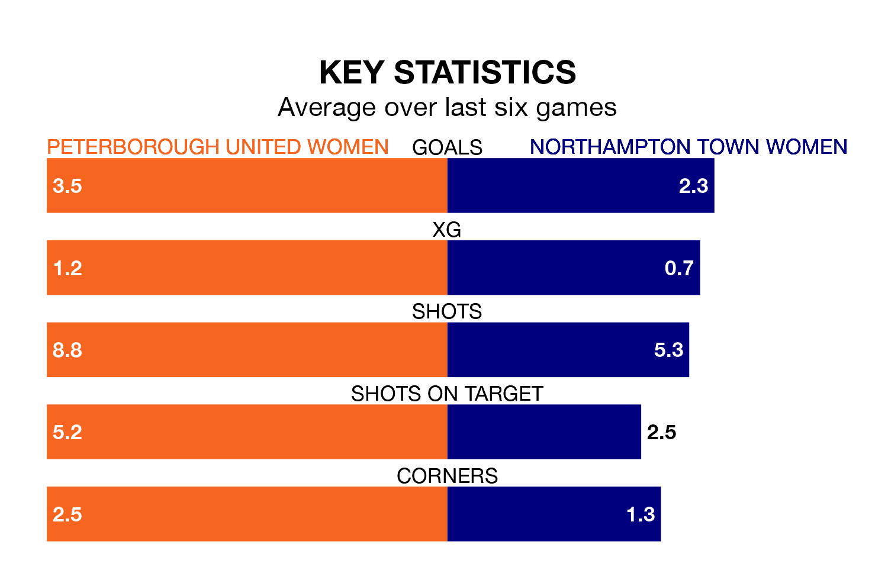

Sunday's early match between Peterborough United Women and Northampton Town Women promises to be one for the neutrals, as two of the Women's National League Division One Midlands's most free-scoring sides go head-to-head.
Ahead of the game, Peterborough United and Northampton Town sit second and fourth in the goal-scoring charts, with 55 and 45 goals respectively.
Peterborough United are third in the table after 19 games, of which they have won 13 and drawn one, earning 40 points.
Northampton Town are two places behind the hosts in fifth, with 10 wins and two draws putting them on 32 points.
Peterborough United are in good form in the Women's National League Division One Midlands, with four wins and a draw from their last six games.
With three wins and a draw over that period, the away team's form is worse – they have taken 10 points from 18, compared to Peterborough United's 13.
In the last three years, Peterborough United and Northampton Town have played each other on three occasions. Northampton Town won two of them and they drew once.
Their last meeting was on August 20, when Northampton Town won 2-1 at home.
Peterborough United's last match was on April 7, a 3-2 win against Lincoln City LFC.
Northampton Town lost 1-0 against Leafield Athletic Women last time out, also on April 7.
Updated: 10:01 (UTC), 12/04/24